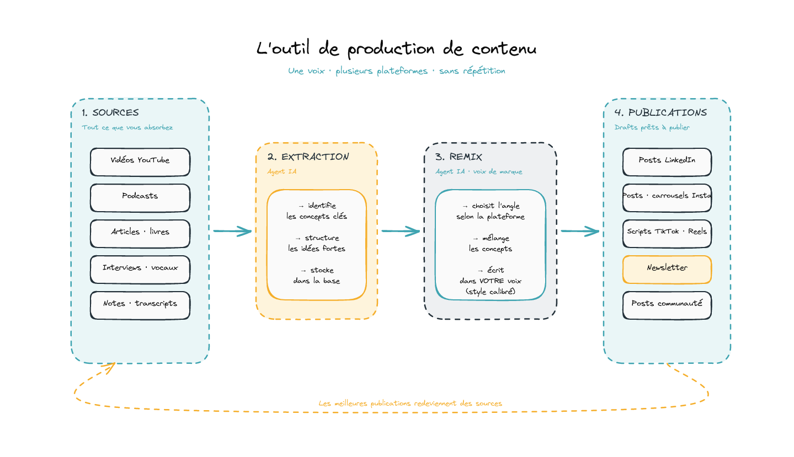
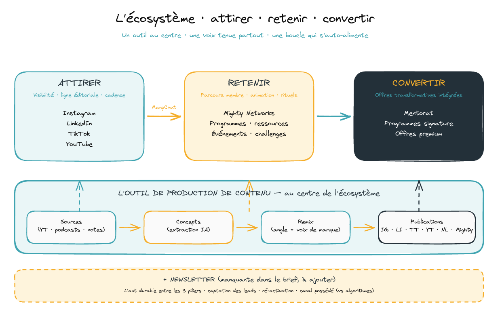

Un système où le contenu attire, la communauté retient, les offres convertissent.
Votre brief décrit ce que peu de marques savent vraiment articuler. Voici comment je peux vous aider à le construire — avec un outil qui tient la voix sur toutes vos plateformes, et une expérience concrète de la mécanique communautaire.
01Pourquoi je vous écris en particulier
Quand j'ai relu votre brief, deux de vos cinq axes décrivent exactement l'outil que j'ai développé.
Axe 3 de votre brief
Connexion entre les écosystèmes
Mon studio Automation Builders construit ces passerelles tous les jours. Mon outil + ManyChat couvrent l'intégralité de cet axe : captation lead Instagram, conversation flows, redirection communauté, mesure des conversions.
Axe 4 de votre brief
Création de contenu multi-plateformes
C'est exactement ce que mon outil fait. Pipeline Sources → Concepts → Remix → Publications, avec un agent IA qui apprend votre style éditorial et produit des drafts dans votre voix, sur toutes les plateformes, à grande échelle.
C'est ce que j'utilise pour mes propres publications. C'est ce qui me permet de tenir LinkedIn, TikTok et YouTube en parallèle sans diluer le ton. C'est ce que je peux installer chez vous.
02L'outil de production de contenu
Le cœur du dispositif. Une chaîne en 4 temps qui transforme tout ce que vous absorbez (vidéos, podcasts, livres, vocaux) en publications cohérentes et différenciantes sur toutes vos plateformes — dans votre voix, pas dans une voix générique.

Schéma — L'outil de production de contenu en 4 étapes
03Comment je me positionne sur la mission
J'apporte trois choses, pas plus, pas moins :
L'outil sur mesure
Calibré sur votre voix sur 20 à 30 textes représentatifs (vos meilleurs posts, vos vidéos transcrites, votre manifeste). Une fois calibré, il produit en quelques minutes ce qui vous prendrait des heures à la main, dans votre univers, sans que vous ayez à recommencer le travail à chaque plateforme.
La structure de la communauté
J'opère Club SMART sur Skool depuis plusieurs mois. Skool n'est pas Mighty Networks, mais 80 % des principes de plateforme communautaire sont transférables : parcours d'onboarding, dynamiques d'engagement, mécaniques d'activation, organisation des espaces.
Le liant entre vos plateformes
Automatisations, intégrations, funnels ManyChat, mesure des conversions. C'est mon métier dans Automation Builders depuis le début.

Schéma — L'écosystème complet · attirer · retenir · convertir
04Sur la voix éditoriale de votre marque
Je serai transparent : votre univers (mentorat neurosomatique, leadership incarné, transformationnel, identitaire) n'est pas le mien. Je suis pragmatique, build in public, tech & IA. Si vous cherchez quelqu'un qui va écrire vos posts dans votre voix de manière native, en solo, je ne suis pas la bonne personne.
Mais l'outil que je vous installe la réplique. Vous me fournissez vos textes représentatifs, je calibre l'agent, et il devient capable d'écrire des drafts Instagram, des carrousels, des posts communauté, des newsletters dans votre ton, à une cohérence que vous ne pouvez pas tenir à la main quand le rythme s'accélère.
C'est précisément l'intérêt de ma proposition : vous gardez le pilotage de la voix, l'outil exécute à votre place.
Une remarque sur votre brief
La newsletter manque — et c'est la brique qui tient l'écosystème dans la durée
Votre brief parle d'Instagram, de Mighty Networks, de funnels, mais pas de newsletter. À mon avis c'est la brique manquante essentielle :
– elle capte les leads Insta qui ne basculent pas immédiatement dans la communauté
– elle reste indépendante des algorithmes (canal possédé)
– elle ré-active régulièrement votre audience vers vos offres
Je peux l'intégrer dès le départ au dispositif, sans coût supplémentaire — l'outil produit des drafts newsletter au même titre que les posts.
05Mes références
Présence éditoriale personnelle
Je publie quotidiennement sur 3 plateformes — voici comment je tiens la cohérence de voix grâce à l'outil :
Club SMART · Communauté Skool autour de l'IA appliquée
Soyons honnêtes : la communauté démarre. Je l'ai reprise il y a environ un mois, c'est une communauté payante, et nous en sommes aujourd'hui à 102 membres actifs. Les chiffres ci-dessous sont publics et extraits du dashboard Skool — ils donnent un ordre d'idée de ce que je sais faire en termes de capture multi-canal et de conversion, sur une base modeste mais qui croît de manière saine.
102
Membres actifs
54%
Engagement
36,4%
Taux conversion
6
Modules de parcours
Sources de signups · 30 derniers jours
YouTube37,2 %
Direct32,6 %
LinkedIn11,6 %
Skool network9,3 %
Affiliate4,7 %
Newsletter (Kit)2,3 %
Lecture rapide : ce qui marche le mieux n'est pas une seule plateforme, c'est l'orchestration entre plusieurs canaux qui s'alimentent. C'est exactement ce que vous voulez construire.
Honnêtement : pas de référence Mighty Networks en production, ni de gros volume Instagram à montrer. Je préfère le dire d'entrée plutôt qu'enjoliver. Mais l'outil compense parce qu'il fait le travail.
Enveloppe budgétaire
2 000 $ CAD HT
Mise en place complète du dispositif. Détails du périmètre et conditions à valider en RDV.
Prochaine étape
Je vous propose une démo de l'outil
30 minutes ensemble. Je fais tourner le pipeline sur un de vos textes existants, dans votre univers. Vous jugez si la voix est tenue. On décide ensuite si on va plus loin.